1. Naruto (2002-2007)
Naruto trains at the Ninja Academy and grows alongside Sasuke and Sakura as Team 7, taking on missions that lead into the Chunin Exams and beyond.
Watch: Episodes 1-220, pausing for the movies below.
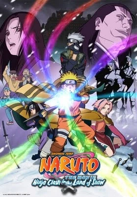
2. Naruto the Movie: Ninja Clash in the Land of Snow (2004)
Team 7 is hired to protect a famous actress during a film shoot, only to discover she is the exiled princess of the Land of Snow.
Watch after: Naruto Episode 101
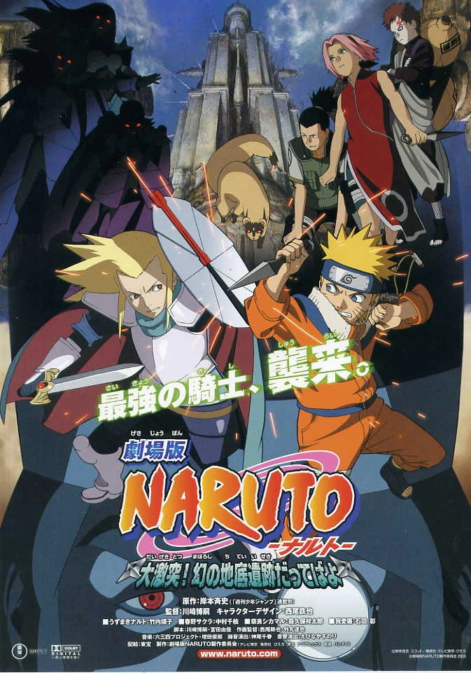
3. Naruto the Movie 2: Legend of the Stone of Gelel (2005)
Naruto, Shikamaru and Sakura face a mysterious army searching for the Stone of Gelel, a powerful ancient source of energy.
Watch after: Naruto Episode 160
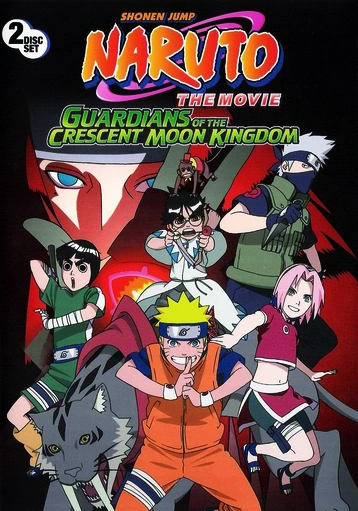
4. Naruto the Movie 3: Guardians of the Crescent Moon Kingdom (2006)
Naruto, Kakashi, Sakura and Rock Lee escort a spoiled prince home, only to find his kingdom has been taken over during a coup.
Watch after: Naruto Episode 196
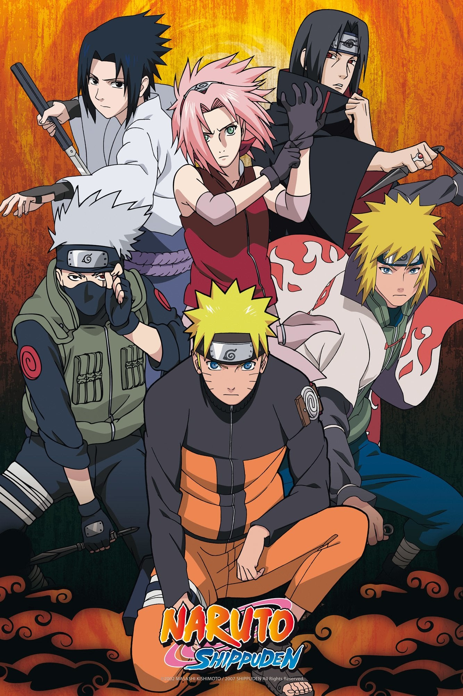
5. Naruto Shippuden (2007-2017)
After two and a half years of training, Naruto returns to the Leaf Village to rescue Sasuke and face the Akatsuki, leading to the Fourth Great Ninja War.
Watch: Episodes 1-500, pausing for the movies below.
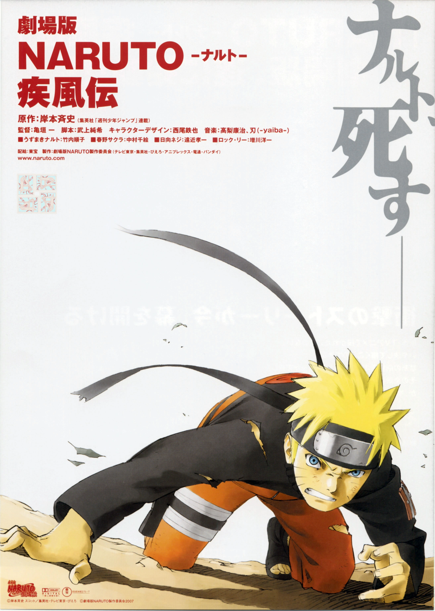
6. Naruto Shippuden the Movie (2007)
Naruto is assigned to protect the priestess Shion, who foresees his death, while an army of stone soldiers threatens to revive a demon.
Watch after: Shippuden Episode 32
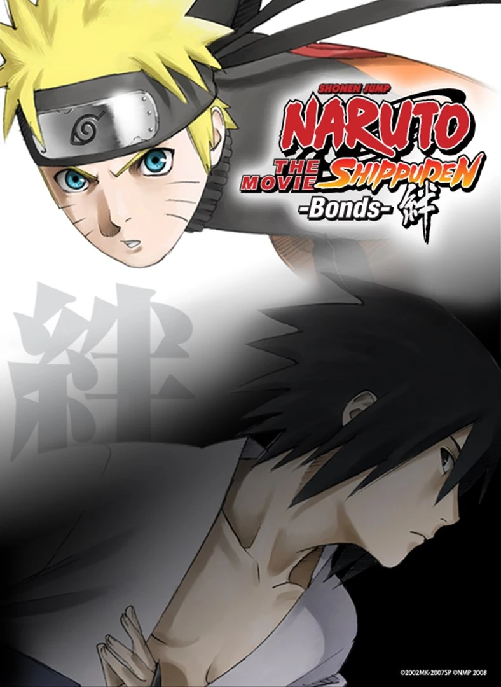
7. Naruto Shippuden the Movie: Bonds (2008)
Ninja from the Land of the Sky launch a surprise attack on the Leaf Village, and Naruto and Sasuke's paths cross once again.
Watch after: Shippuden Episode 71
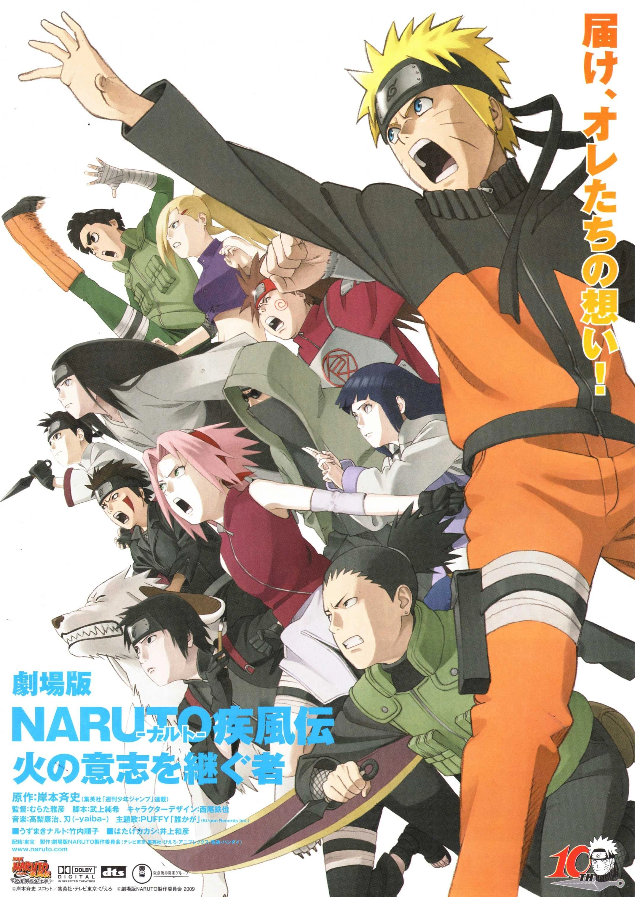
8. Naruto Shippuden the Movie: The Will of Fire (2009)
Ninja with Kekkei Genkai abilities are disappearing, and Kakashi sets out alone to stop a rogue ninja from sparking a Fourth Great Ninja War.
Watch after: Shippuden Episode 121
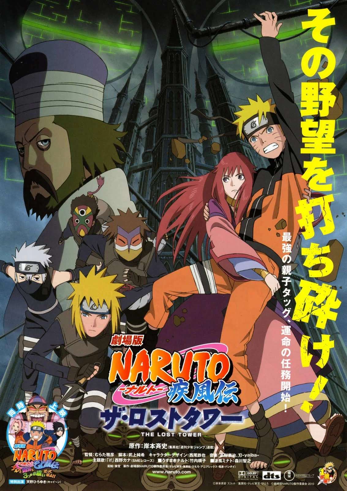
9. Naruto Shippuden the Movie: The Lost Tower (2010)
Naruto is sent 20 years into the past, where he teams up with a young Minato Namikaze to stop the rogue ninja Mukade.
Watch after: Shippuden Episode 143
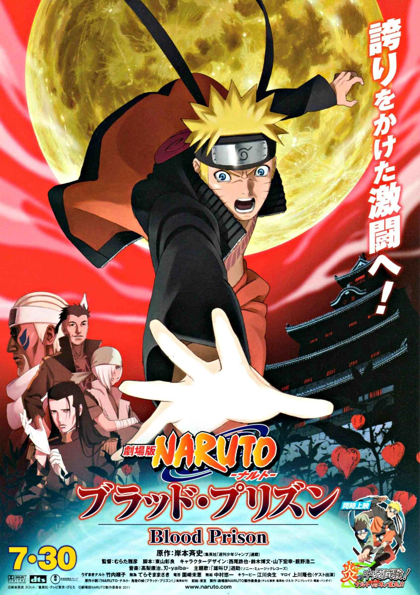
10. Naruto the Movie: Blood Prison (2011)
Framed for an attempted assassination, Naruto is locked away in Hozuki Castle, a prison that drains its inmates' chakra.
Watch after: Shippuden Episode 196
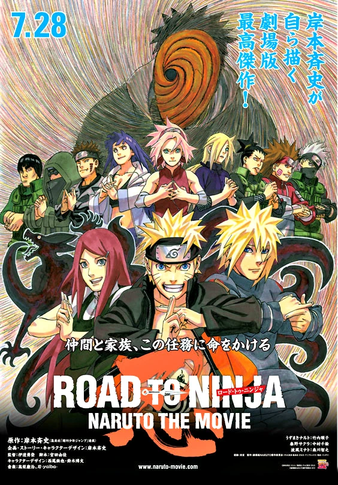
11. Road to Ninja: Naruto the Movie (2012)
Masked Man traps Naruto and Sakura in an alternate world where Naruto's parents are alive and everyone's personalities are flipped.
Watch after: Shippuden Episode 271
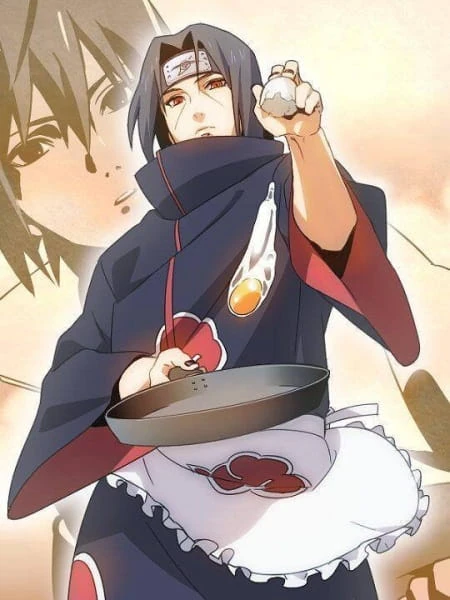
12. Itachi's Story: Light & Darkness
The life of Itachi Uchiha, from his childhood during the Third Great Ninja War to the impossible choice he made to protect the Leaf Village and Sasuke.
Watch: Shippuden Episodes 451-458
13. The Last: Naruto the Movie (2014)
Two years after the war, the moon is falling toward Earth, and Naruto must rescue Hinata's sister Hanabi while finally realizing his feelings for Hinata.
Watch after: Shippuden Episode 493
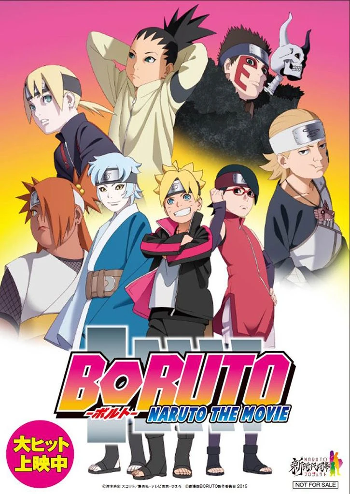
14. Boruto: Naruto the Movie (2015)
Naruto's son Boruto enters the Chunin Exams as two Otsutsuki clan members come hunting for Naruto and the Nine-Tails.
Watch after: Shippuden Episode 500, then continue with Boruto: Naruto Next Generations.